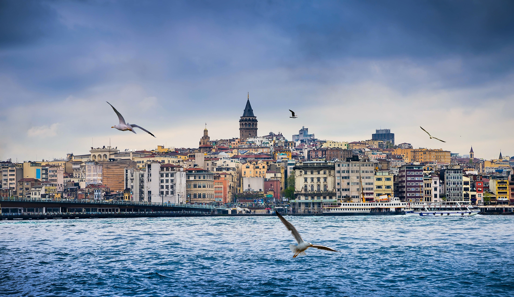
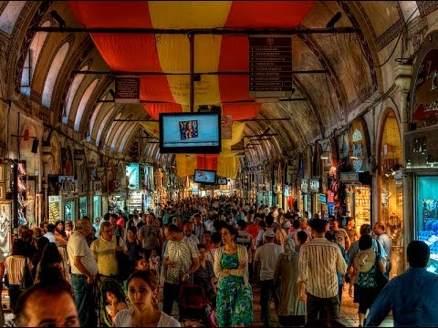
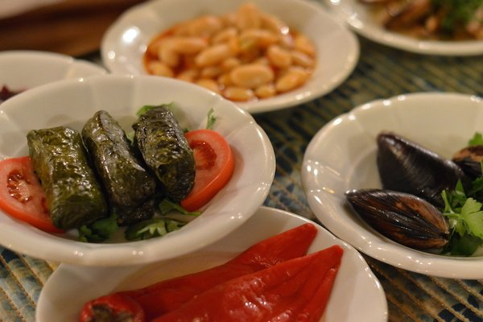
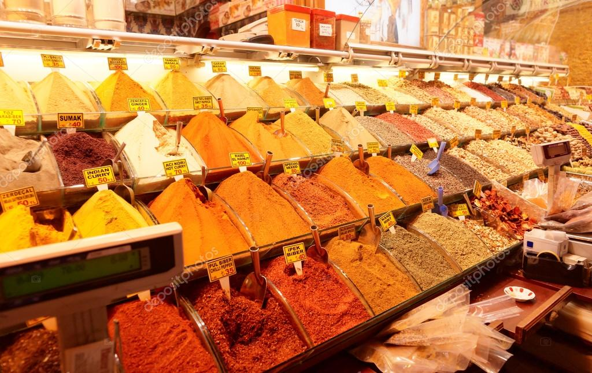
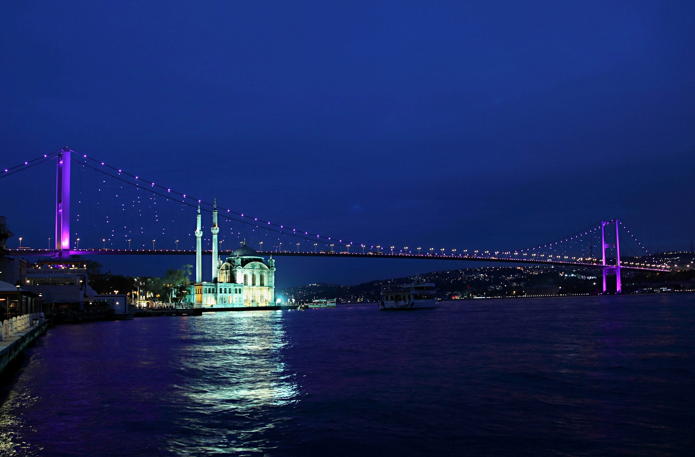

Top 7 Reasons to Visit Istanbul
Istanbul has it all: over 2500 years of history, culture, and traditions, amazing landmarks, vibrant nightlife, and breathtaking views. This transcontinental metropolis is a fast-paced cultural melting pot you can’t afford to miss. Here are the top 7 reasons why you should plan a trip to Istanbul right now. 
Istanbul – the City of Four Empires
Rome and Istanbul are both over two-and-a-half millennia old, but for the majority of the time Istanbul was larger, more influential, and wealthier than Rome.
Istanbul has been the capital of four empires: the Roman Empire (330-395), the Byzantine Empire (395-1204), the Latin Empire (1204-1261), the Byzantine Empire (1261-1453) and the Ottoman Empire (1453-1922). Istanbul’s history is very rich, and remains of each of these empires can still be witnessed.
Istanbul – the City of Contrasts
As the cliché goes, Istanbul is where east meets west, or vice versa. This unique location combined with its history and occupants of different cultural background make this city a true melting pot.
In Istanbul century old buildings stand near modern skyscrapers. In the same area mosques, churches and synagogues call for devote inhabitants. Liberal and conservative Muslims peacefully live side by side, together with people from a dozen other religions or beliefs. However, they all have one thing in common: the world famous Turkish hospitality.
Istanbul – the City of Amazing Landmarks
 Despite the city’s age, thankfully many remains of Istanbul’s opulent past remained intact. The cultural heritage of the metropolis is impressive.
Who hasn’t heard of landmarks such as Hagia Sophia, Topkapi Palace, Blue Mosque, Dolmabahçe Palace, Grand Bazaar, and the Spice Bazaar.
And then there are the lesser known, but not less beautiful, spots such as Süleymaniye Mosque, Basilica Cistern, the Galata Tower, as well as numerous churches from the Byzantine era.
Istanbul – the Perfect Mix of Eastern and Western Food
 The century old mix of cultures also had a huge impact on the food scene. In Istanbul, you can enjoy different cuisines, varying from authentic Ottoman food, over typical Turkish food with its delicious mezes and meat or fish dishes, to the modern kitchen of the West. If you still have some appetite left, by all means, try one of the many Turkish desserts. Please, don’t ask me directions to the closest McDonalds … live a little! See more details about Turkish food and drinks.
Istanbul – the City with Vibrant Nightlife
Thanks to Istanbul’s unique geographical location many the top nightlife venues are located by the Bosphorus or on a rooftop offering a view of the magnificent skyline. The nightlife is vibrant, with an abundance of choice to satisfy everybody’s taste.
If partying through the night is not your thing and you prefer to relax with on a cafe terrace, then you have plenty of options for that too.
Istanbul – the City of Serious Shopping
 Shops galore in Istanbul. You can go luxurious and mainstream by a visit to one of the many modern shopping centers spread all over the city. Or you can hunt for authentic, handmade items by local designers and craftsmen in less touristic parts of town. If you like to bargain, then the Grand Bazaar is of course shopping heaven on Earth. Also, don’t forget to stock up on exotic spices, olives or the great selection of nuts available.
Istanbul – the City with Breathtaking Views
There is no shortage of breathtaking views from the city. One of my favorites is the city’s silhouette seen from a boat on the Bosphorus during sunset. In second place comes the view from the bridges, unfortunately you need a ride to experience that. For a 360 panoramic view of Istanbul, you can visit the Galata Tower or one of the many rooftop bars.
